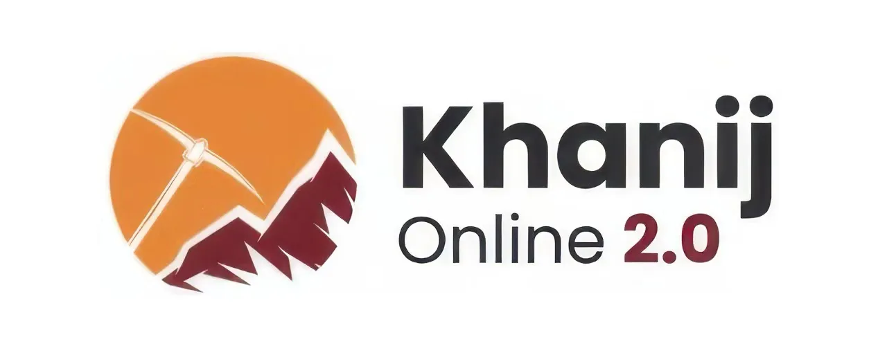

16th October 2025
Chhattisgarh Infotech Promotion Society (CHiPS) has successfully launched Khanij Online 2.0 (KO 2.0), a centralized digital platform designed to strengthen transparency, traceability, and financial integrity in state mining operations. CS TECH Ai, the system integrator for the project, led the design, development, implementation, and ongoing maintenance of the upgraded platform, while ensuring continuity of the existing Khanij Online (CHiMMS) system.
Khanij Online 2.0 represents a significant step forward in India’s move toward technology-led mineral governance. Built on an “Enforcement-by-Design” framework, the platform embeds compliance directly into operational workflows. Mineral dispatches can proceed only through pre-paid e-permits and active GPS verification, creating a fully auditable logistics chain and helping eliminate revenue leakages.
The unified, cloud-based system integrates the entire mining value chain—including lease management, logistics, vehicle tracking, and centralized command control—onto a single digital platform. By replacing fragmented and paper-driven processes, the solution enables real-time oversight, traceability, and accountability across state-wide mining operations.
Commenting on the milestone, Rahul Joharapurkar, Chief Operating Officer, CS TECH Ai, said, “Khanij Online 2.0 is not just a digital platform, but a structural reform. By embedding compliance into every stage of mineral movement, the system delivers inherent transparency and financial accountability at scale.”
CS TECH Ai played a critical role in consolidating large legacy datasets, ensuring system resilience, and enabling 24×7 operational reliability across state infrastructure. The successful go-live demonstrates the scalability of the company’s AI-led digital and geospatial solutions, with the platform serving as a replicable model for other mineral-rich states in India.
The event also reflected perspectives from public-sector leadership on the increasing role of digital governance in managing large infrastructure portfolios. Participants discussed how integrated digital systems are becoming essential to maintaining scale, compliance, and long-term performance in public works.
The project reinforces CS TECH Ai’s growing footprint in digitally governed public-sector systems, alongside its work in water management, infrastructure delivery, and large-scale engineering programs. The company continues to support national and state agencies through platforms that enable data-driven decision-making, operational transparency, and long-term sustainability.